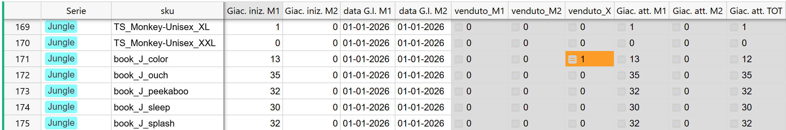
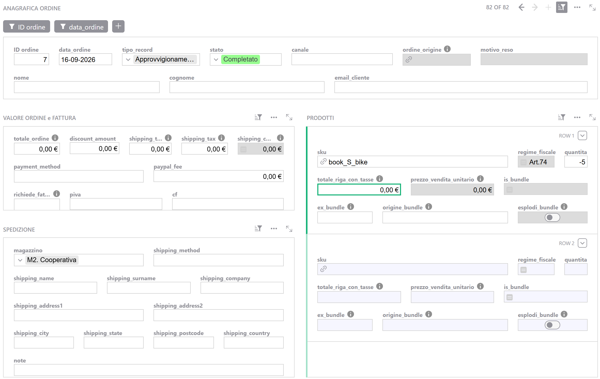
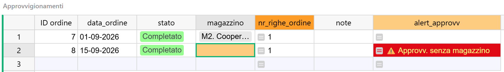
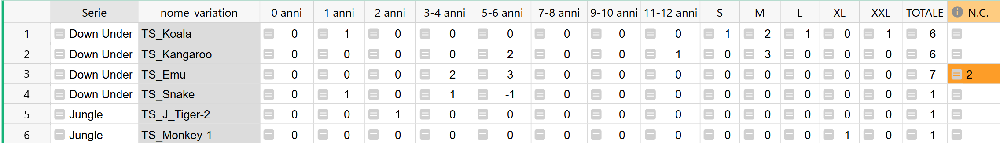
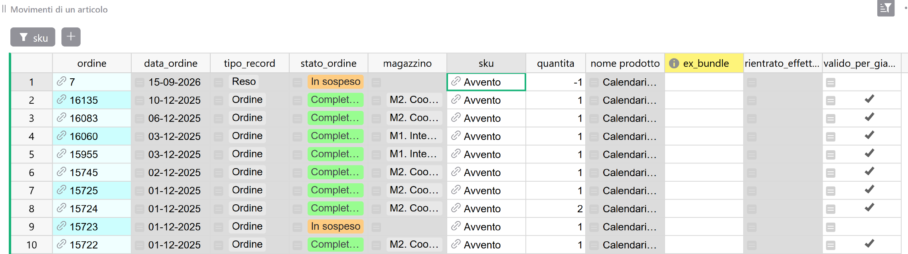

Guida 6
Giacenze e inventario
Versione del 12/09/2026 · Sistema «Magazzino LwM»
Questa è la guida del magazzino: come si leggono le giacenze, come si registra la merce che arriva, come si conta quello che c'è davvero, e cosa fare quando i conti non tornano.
La guida 1 dice dove stanno i campi delle giacenze e quali sono da non toccare. Questa parte da lì e spiega i gesti.
§1 In breve
Le giacenze non si scrivono: si calcolano. Nella pagina Giacenze c'è un solo dato che metti tu — quanti pezzi c'erano a una certa data — e tutto il resto il sistema lo ricava dai movimenti: le vendite, i resi rientrati, i carichi di merce.
Da qui i tre gesti di questa guida:
| Il gesto | Quando | Dove |
|---|---|---|
| Leggere le giacenze | Quando ti chiedi quanti pezzi hai e dove | Sezione 3 |
| Registrare un carico | Quando arriva merce | Sezione 5 |
| Contare il magazzino | Quando vuoi sapere se i numeri corrispondono alla realtà | Sezione 7 |
Ce n'è un quarto, che sta altrove: la merce che si sposta invece di entrare — un trasferimento fra i due magazzini, la correzione di un ordine partito da entrambi — si registra come Altri movimenti, e la procedura è nella guida 3, sezione 12. La meccanica è la stessa che troverai qui.
I resi non sono in questa guida: quello che dichiari sul rientro della merce muove le giacenze, ma si fa dalle pagine dei resi (guida 4).
§2 Come nasce il numero
Il conto è sempre questo, per ciascuno dei due magazzini:
Il primo numero lo scrivi tu: è la giacenza iniziale, con la sua data di riferimento. Il secondo il sistema lo somma dalle righe di tutti i movimenti.
La parola «usciti» va presa alla lettera: le quantità sulle righe contano i pezzi che escono dal magazzino. Una vendita è positiva, un reso rientrato e un carico sono negativi, perché la merce entra. È la regola 3 della guida 0, e in questa guida la incontri a ogni procedura.
Quando un movimento conta
Perché una riga entri nel conto di un magazzino servono cinque cose insieme. Nessuna di queste, se manca, produce un errore.
| Serve che… | Altrimenti |
|---|---|
lo stato del record sia Completato o Rimborsato | il record esiste, si vede, e non muove niente |
| il magazzino sia assegnato sulla testata | i pezzi finiscono nel venduto orfano: escono dal totale, da nessuno dei due magazzini |
| la data non sia anteriore alla data di partenza di quel magazzino | il movimento viene ignorato, del tutto e in silenzio |
| lo SKU della riga sia agganciato a un articolo | la riga è cieca: nessun effetto sulle giacenze (guida 5) |
| l'articolo non sia un kit e non sia un prodotto virtuale | non hanno giacenza: la riga viene saltata |
Sui resi ce n'è una sesta: la merce deve risultare rientrata. Un rimborso senza rientro dichiarato conta per il fisco e non per il magazzino (guida 4).
I due magazzini
Le colonne dicono M1 e M2, e il menu del magazzino sugli ordini dice M1. Interno e M2. Cooperativa: M1 è il Magazzino Interno, M2 la Cooperativa. Le colonne che leggi nella pagina Giacenze sono «Giac. iniz.», «data G.I.», venduto e «Giac. att.», ciascuna nelle sue due versioni.
data G.I. M1 = 1 luglio · Giac. iniz. M1 = 40
─────────────────────────────────────────────────────────────────────►
│ │ │
15 giugno 1 LUGLIO 10 luglio
carico di 20 ▲ vendita di 3
pezzi │ │
│ il taglio │
▼ ▼
IGNORATO CONTATA
(è prima della data) 40 − 3 = 37
Il carico del 15 giugno non viene sommato: si presume che quei 20 pezzi
siano già dentro il 40 che hai dichiarato al 1° luglio.
Perché funziona così — la data dice «da qui in poi conta tu»
La giacenza iniziale non è «quanti pezzi ho comprato in tutto»: è quanti pezzi c'erano all'inizio di quel giorno. Tutto ciò che è successo prima è già dentro quel numero, e il sistema lo ignora di proposito — altrimenti conterebbe due volte gli stessi pezzi.
È il motivo per cui la data non è un dettaglio anagrafico ma un vero comando, e per cui un carico datato prima della data di partenza non ha alcun effetto. È anche il motivo per cui spostare indietro una data non è un gesto innocuo: riaccende movimenti già compresi nel numero che hai scritto.
Per i pezzi usciti da ordini senza magazzino il sistema usa la più vecchia delle due date. Conta solo sapere che, se le due date sono molto diverse fra loro, il venduto orfano parte dalla prima delle due.
§3 Leggere la pagina Giacenze
Ogni colonna risponde a una domanda diversa, e non sono intercambiabili.
| Se ti chiedi… | Guarda |
|---|---|
| Quanti pezzi ho in tutto? | Giac. att. TOT |
| Da quale magazzino posso spedire? | Giac. att. M1 e Giac. att. M2 |
| Quanto è uscito da quando conto? | venduto_M1, venduto_M2 |
| Ci sono ordini di cui non so ancora il magazzino? | venduto_X |
Le quattro facce di una cella
Vuota vuol dire che la giacenza non esiste: è un kit o un prodotto virtuale. Non è zero.
Zero vuol dire zero pezzi, ed è un'informazione.
In errore vuol dire che manca una data di partenza. L'errore compare appena quell'articolo compare in una riga d'ordine — quindi, sugli articoli creati dal sistema, praticamente subito, perché è un ordine a crearli. Si risolve scrivendo le date (sezione 6).
Negativa è sempre un segnale, mai un dato: significa che sono usciti più pezzi di quanti ce n'erano. Le cause sono nella sezione 9.
Il venduto orfano si legge in due direzioni
venduto_X raccoglie i pezzi di movimenti a cui nessuno ha assegnato un magazzino. Il totale li toglie comunque, i due magazzini no.
- Positivo: sono vendite in attesa che tu scelga il magazzino. È la coda di Ordini Aperti, ed è normale trovarla diversa da zero (guida 3).
- Negativo: c'è un movimento che aggiunge merce senza dire dove. Di solito un carico o una differenza d'inventario a cui è rimasto vuoto il magazzino. Questo non è una coda: è una cosa da sistemare.
Cosa non trovi in questa pagina
Tre filtri tengono fuori i kit, i prodotti virtuali e i genitori delle famiglie di magliette. Sono i filtri che definiscono la pagina, e non stanno nella barra in alto ma nel menu dei filtri: se li togli, la pagina continua a mostrare numeri, solo che sono altri numeri (guida 8, sezione 5).
Ne segue un limite da conoscere: la giacenza di un kit non è consultabile da nessuna parte. Non è una dimenticanza — un kit non ha pezzi propri, si muovono i suoi componenti — ma se la cerchi non la trovi. Per sapere quanti kit potresti confezionare, guarda la giacenza del componente più scarso: è quello che ti limita.
In barra restano due filtri di comodo, che puoi cambiare liberamente: uno per tipo di prodotto, uno per isolare i componenti di un certo kit.
Il numero del sito è un altro numero
Le giacenze di Grist restano in Grist: nessun automatismo le porta su WooCommerce (guida 0). Se le scorte sono gestite anche sul sito, carichi e conte vanno rifatti anche lì — è una delle poche cose che si fanno due volte, e nessuno te lo ricorda.
{kind=link}

§4 Contare o registrare?
Prima delle procedure conviene sapere quale serve, perché sbagliare non produce nessun avviso: produce un numero che sembra plausibile.
La domanda giusta è una sola: sto dicendo quanti pezzi ci sono, o sto registrando qualcosa che è accaduto?
Cos'è successo alla merce?
│
┌───────────────────────┼───────────────────────┬──────────────────┐
│ │ │ │
è ARRIVATA si è SPOSTATA ho CONTATO è TORNATA
da un fornitore fra i due magazzini e non torna da un cliente
o dalla stampa (o è rotta, o con Grist
│ è un omaggio) │ │
▼ │ ▼ ▼
APPROVVIGIONAMENTO ▼ ALTRI MOVIMENTI è un RESO
(sezione 5) ALTRI MOVIMENTI (sezione 7) (guida 4)
(guida 3 §12)
E la RETTIFICA della giacenza iniziale?
Solo per far partire il conto: un articolo
nuovo, o il primo avvio (sezione 6)
Lo stesso arrivo, registrato in quattro modi
Hai 40 copie in magazzino e te ne arrivano 100.
| Cosa fai | Cosa ottieni |
|---|---|
| Carico di 100 pezzi | 140. È giusto, e resta scritto quando sono arrivate |
| Rettifica della giacenza iniziale a 140 | 140. È giusto oggi, ma hai cancellato la storia: le vendite precedenti alla data nuova non contano più |
| Rettifica a 140 e poi il carico | 240. Hai contato due volte gli stessi pezzi |
| Differenza d'inventario di 100 | 140. Corretto, ed è la strada quando il 100 non è un arrivo ma il risultato di una conta |
Perché funziona così — un numero e un movimento non sono la stessa cosa
La giacenza iniziale dichiara uno stato di fatto: a questa data c'erano tanti pezzi. Riscriverla sostituisce il vecchio valore, non lascia traccia di quello che c'era prima, e sposta il taglio da cui il sistema comincia a contare.
Un movimento registra un fatto: questo giorno, in questo magazzino, sono entrati o usciti tanti pezzi. Si somma a quelli che c'erano già, resta leggibile, e non tocca il passato.
Quasi tutto quello che ti capita è un fatto, non uno stato. Per questo la rettifica serve in due soli casi — far partire un articolo nuovo, e il primo avvio del sistema — e in tutti gli altri si registra un movimento.
§5 Registrare un carico di merce
Un approvvigionamento è merce che entra: una ristampa che arriva dalla tipografia, una fornitura di magliette, uno scatolone che la Cooperativa riceve.
È interamente manuale: nessun automatismo lo riguarda, nulla lo innesca, e nessuno ti ricorda di farlo. (comportamento atteso, non ancora verificato sul campo: nessun carico reale è ancora passato dal sistema)
Prima di cominciare
Controlla che gli articoli esistano nella tabella Articoli, con la scheda completa. Se manca qualcosa, crealo prima (guida 5).
Se ti è arrivato un kit già confezionato, carica i componenti, non il kit. I kit non hanno giacenza: una riga con lo SKU di un kit viene semplicemente ignorata, senza avvisi. Si carica un pezzo per riga.
La procedura
Si inserisce dalla maschera Inserimento Ordini, come un ordine.
1 · Anagrafica. Il tipo di record su Approvvigionamento — è la prima cosa da scegliere, perché è quella che decide tutto il resto. Lo stato su Completato: con qualunque altro valore il record esiste, si vede, e non muove un pezzo. La data è quella in cui la merce è entrata, e non deve essere anteriore alla data di partenza di quel magazzino.
Il numero se lo dà il sistema e non si tocca (guida 3, sezione 6).
Il canale puoi lasciarlo vuoto. Se ti fa comodo tenere traccia della provenienza — la tipografia, il fornitore dei gadget — puoi aggiungere da sola le voci che ti servono a quel menu: si fa dal pannello della colonna, ed è spiegato nella guida 8, sezione 10. Nessuna formula legge quel campo, quindi è spazio libero.
Nei campi del nome e cognome potresti scrivere il fornitore. Anche questi nessuno li legge: servono solo a te per ritrovare il carico.
2 · Spedizione. Il magazzino. Sta sulla testata, quindi vale per tutte le righe: merce che arriva in due magazzini richiede due record, uno per deposito. Se resta vuoto, i pezzi finiscono nel venduto orfano e non incrementano niente.
3 · Valore ordine e fattura. Si lascia tutto vuoto. Gli approvvigionamenti non entrano in nessun report, quindi il totale, le commissioni e il campo della fattura non servono a nulla. Il riferimento alla fattura del fornitore va nelle note, dove lo ritroverai.
4 · Prodotti. Una riga per articolo, con lo SKU e la quantità in negativo: −100 per cento copie che entrano. Il segno è la cosa che si sbaglia più spesso, ed è anche l'unica delle quattro condizioni che ha un controllo dedicato: una quantità positiva su un carico accende un avviso.
Della riga non serve nient'altro: i campi economici restano vuoti. La casella dell'esplosione dei kit non si tocca: su una riga di carico non ha senso, e cosa succeda accendendola non è mai stato provato.
5 · Il controllo finale. Apri la pagina Approvvigionamenti e cerca il record che hai appena inserito. Se la colonna degli avvisi è vuota, il carico sta contando.
Se il record non compare affatto, il tipo non è Approvvigionamento: lo trovi nella pagina Ordini.
{kind=link}

{kind=link}

§6 Le giacenze di un articolo nuovo
Un articolo appena creato ha bisogno di due cose per entrare nel conto: la data di partenza e il numero di pezzi da cui si parte. Si scrivono nella pagina Giacenze, una coppia per magazzino.
Le date si compilano sempre, anche se i pezzi sono zero. Sono la cosa più importante della scheda: senza di esse le colonne del venduto vanno in errore appena l'articolo compare in una riga d'ordine, e non calcolano più niente.
Quale data scegliere. Una data precedente al primo movimento va sempre bene: non c'è niente prima da ignorare. Una data successiva no, perché farebbe scomparire dal conto i movimenti già registrati. Nel dubbio, il giorno in cui hai creato l'articolo va bene se il prodotto non ha ancora venduto; se ha già venduto — è il caso degli articoli creati dal sistema — metti una data precedente al primo ordine.
La merce che entra si carica, non si dichiara. Su un articolo nuovo conviene scrivere zero nelle giacenze iniziali, con le date, e registrare i pezzi che hai in magazzino come un carico (sezione 5). Costa un minuto in più e ti lascia scritto quando sono arrivati e da quale fornitore: la giacenza iniziale, invece, è un numero senza storia.
Sul genitore di una famiglia di magliette non serve niente: non ha pezzi propri e non compare in questa pagina.
Sugli articoli creati dal sistema vale esattamente la stessa cosa, e l'errore nelle colonne del venduto è il segnale che le date mancano. La checklist completa di quegli articoli è nella guida 5, sezione 8.
§7 Contare il magazzino
Contare serve a rispondere a una domanda che il sistema non può porsi: i numeri corrispondono a quello che c'è sullo scaffale? Nessuna formula può accorgersene, perché tutte partono da quello che le hai detto tu.
Non serve contare tutto ogni volta. Le occasioni ragionevoli sono tre: una conta completa, una volta l'anno o quando ti fa comodo; una conta parziale di una serie o di un tipo di prodotto; la verifica di un singolo articolo che non torna, che è il caso più frequente e costa cinque minuti.
1 · Prepara la conta
È il passaggio che evita l'errore più grosso, e dura il tempo di guardare il bancone.
Gli ordini già registrati sono merce che il sistema ha già scaricato, anche se il pacco è ancora lì da spedire. Quindi, prima di contare:
- spedisci quello che è pronto, oppure
- metti da parte i pacchi già fatti e non contarli.
La stessa cosa vale per la merce arrivata e non ancora registrata: o la registri come carico prima di contare, oppure la lasci fuori dalla conta e la registri dopo.
LO SCAFFALE COSA DICE GRIST ─────────── ─────────────── ┌─────────────────┐ │ 12 copie │ ────────────► queste vanno contate: 12 │ sullo scaffale │ └─────────────────┘ ┌─────────────────┐ l'ordine è già registrato, │ 2 copie in un │ ✗ NON quindi Grist le ha già │ pacco da │ contarle togliute: contarle vorrebbe │ spedire │ dire ritrovarsele due volte └─────────────────┘ ┌─────────────────┐ il carico non è ancora stato │ 50 copie │ ✗ NON inserito: se le conti, il │ arrivate ieri, │ contarle carico poi le aggiungerebbe │ mai registrate │ (registrale una seconda volta └─────────────────┘ prima o dopo) La regola: si conta quello che il sistema pensa di avere, non tutto quello che si vede.
2 · Confronta
Apri la pagina Giacenze, filtra quello che ti interessa e porta con te i numeri — puoi esportarla, o stamparla con «Widget di stampa» (guida 8, sezione 12). Poi conta, e annota la differenza per ciascun articolo, magazzino per magazzino.
3 · Registra la differenza come movimento
Per ogni magazzino in cui hai trovato differenze, un record di tipo Altri movimenti, con una riga per articolo:
- quantità positiva se in magazzino ne hai meno di quanto dice Grist — quei pezzi sono usciti senza che nessuno l'abbia registrato;
- quantità negativa se ne hai di più — ci sono pezzi entrati di cui il sistema non sa niente.
La data è quella della conta, mai una data passata. Lo stato su Completato, il magazzino valorizzato, e nelle note il riferimento alla conta.
La meccanica di questo tipo di record, con il suo elenco di controlli, è nella guida 3, sezione 12. Vale la pena ricordare la cosa principale: su Altri movimenti nessun controllo guarda il segno, perché entrambi i segni sono legittimi, e non c'è nessuna pagina che li sorvegli. (comportamento atteso, non ancora verificato sul campo)
4 · Ricontrolla
Riapri Giacenze: il numero deve coincidere con quello che hai contato. Se non coincide, quasi sempre è il segno (sezione 9).
Perché funziona così — la differenza si registra, non si sovrascrive
Verrebbe naturale scrivere il numero contato direttamente nella giacenza iniziale, con la data di oggi. Funziona, e infatti è la strada che la guida indicava un tempo. Ha però due difetti che si pagano dopo.
Il primo: azzera la storia. Spostando la data a oggi, tutti i movimenti precedenti escono dal conto, e con essi ogni possibilità di ricostruire come si è arrivati a quel numero. Il secondo: non lascia traccia. Il valore vecchio viene sostituito, e non c'è modo di sapere che c'è stata una rettifica, quando, né di quanto.
Registrando la differenza come movimento, invece, il numero arriva allo stesso risultato ma resta tutto leggibile nella pagina Movimenti di un articolo: fra sei mesi vedrai che il 30 settembre mancavano tre copie. Ed è anche il motivo per cui la conta non richiede di toccare le date, che sono il comando più delicato di questa pagina.
Spostare pezzi da un articolo vecchio a uno nuovo
Capita quando un prodotto è stato sostituito da un articolo nuovo con uno SKU nuovo, e in magazzino restano pezzi registrati sul vecchio che da ora vendi con il nuovo (guida 5, sezione 9).
Si fa con un solo record Altri movimenti, sullo stesso magazzino, e due righe:
- positiva sullo SKU vecchio — quei pezzi escono da lì;
- negativa sullo SKU nuovo — ed entrano qui.
Nelle note il motivo. Il totale complessivo non cambia, ed è giusto: non è entrato né uscito niente dal magazzino.
§8 La matrice delle magliette
La pagina Giacenze T-Shirt mostra le stesse giacenze della pagina Giacenze, disposte in modo diverso: una riga per modello, una colonna per taglia. Serve a una cosa sola, ed è la domanda che ci si fa davvero davanti a un ordine: di questo modello, che taglie mi restano?
Due cose da sapere per leggerla.
I numeri sono i due magazzini insieme. Ogni cella è la giacenza totale di quella taglia. Non esiste una matrice per magazzino: se ti serve sapere dove sono, torni alla pagina Giacenze e filtri sul tipo di prodotto.
Qui non si scrive niente. È una pagina di sola lettura, ricalcolata da sola. Per correggere una giacenza si passa dalle procedure delle sezioni precedenti.
La colonna N.C.
È un presidio, non un totale, e ha l'intestazione arancione dei controlli. Mostra i pezzi che il sistema ha contato nel totale del modello ma non ha saputo mettere in nessuna colonna-taglia, perché su quell'articolo la taglia non è stata scelta.
Se mostra un numero, si va nella pagina Articoli, si cerca il modello e si sceglie la taglia mancante dal menu (guida 5, sezione 5). La taglia non si compila mai da sola.
Una maglietta può anche sparire dalla matrice invece di finire in N.C., e succede quando le mancano il tipo di prodotto, il tipo di variante o il genitore. È un caso diverso e più insidioso, perché non lascia nessun segno: è spiegato nella guida 5, sezione 5.
{kind=link}

§9 Quando i conti non tornano
Il primo istinto è cercare l'errore. Funziona meglio l'istinto opposto: ricostruire da dove viene il numero, che qui si può fare fino in fondo, perché ogni giacenza è la somma di righe che puoi vedere una per una.
Le tre domande, nell'ordine
1 · Da quale data parte questo articolo? Apri Giacenze e guarda le due date e le due giacenze iniziali. Se una data manca, hai già trovato il problema. Se una data è più recente di quanto pensavi, ci sono movimenti che il conto sta ignorando.
2 · Quali righe compongono il venduto? Apri la pagina Movimenti di un articolo e filtra su quello SKU. Vedi tutti i movimenti di quell'articolo — vendite, resi, carichi, differenze — con tipo, stato, magazzino e quantità.
3 · Quali di quelle righe contano davvero? È la colonna valido_per_giacenze, e risponde da sola alla domanda che altrimenti richiederebbe di incrociare tre campi. Le righe in cui è spenta esistono, si vedono, e non muovono niente.
Attenzione a una cosa, leggendo quella pagina: mostra anche le righe che non contano, ed è il motivo per cui esiste. Sommare a occhio le quantità non ti dà il venduto.
{kind=link}

Sintomi e cause
| Il sintomo | La causa più probabile | Dove si guarda |
|---|---|---|
| Le colonne del venduto sono in errore | Manca una data di partenza | Giacenze, sezione 6 |
| Una giacenza è negativa | Il segno invertito su un carico o su una differenza; oppure una giacenza iniziale mai inserita su un articolo che ha venduto | Movimenti di un articolo, sezioni 5 e 7 |
| Un magazzino è sbagliato, ma il totale è giusto | Un movimento è stato attribuito al magazzino sbagliato | Movimenti di un articolo, colonna del magazzino |
| Il totale è sbagliato di poco, e il venduto orfano è diverso da zero | Ci sono ordini in attesa del magazzino: è una coda, non un errore | Ordini Aperti (guida 3) |
| Il venduto orfano è negativo | Un carico o una differenza senza magazzino | Approvvigionamenti, oppure Ordini filtrata sul tipo |
| Un carico non ha alzato niente | Data anteriore, SKU non agganciato, SKU di un kit, oppure stato non Completato | Sezione 5, ultimo riquadro |
| Lo stesso prodotto compare due volte con lo stock diviso | Due articoli con SKU leggermente diversi | Guida 5 e guida 9: non si corregge lo SKU |
| Un kit compare nella pagina Giacenze | Non ha una ricetta, oppure la ricetta è stata cancellata | Guida 5, sezioni 10 e 11 |
| Il numero non corrisponde allo scaffale e i movimenti sono tutti regolari | È quello che la conta serve a scoprire | Sezione 7 |
§10 Attenzione a
I sei errori che questa guida serve a evitare. Nessuno produce un messaggio di errore.
Registrare un carico con la quantità positiva. Le quantità contano i pezzi che escono: la merce che entra è negativa. Su un carico c'è un avviso che lo segnala, su una differenza d'inventario no.
Lasciare il tipo di record su Ordine. Il magazzino si muove come deve, e il record entra nei report come un incasso negativo.
Datare un movimento prima della data di partenza del magazzino. Il record esiste, si vede, non ha nessun effetto, e nessuna colonna lo segnala.
Spostare indietro una data di partenza. Riaccende movimenti già compresi nella giacenza iniziale, e li conta una seconda volta.
Riscrivere la giacenza iniziale per far tornare un numero. Cancella la storia precedente e non lascia traccia. Quello che hai contato è un fatto: si registra come movimento.
Contare i pacchi già pronti da spedire. Il sistema quelle copie le ha già scaricate: contarle di nuovo crea pezzi che non esistono.
§11 Se qualcosa va storto
| Il sintomo | Cosa guardare |
|---|---|
| Una giacenza non torna | Le tre domande della sezione 9 |
| Un carico inserito non compare in Approvvigionamenti | Il tipo di record non è Approvvigionamento: lo trovi nella pagina Ordini |
| Un kit non ha giacenza da nessuna parte | È corretto: non esiste. Guarda i suoi componenti (sezione 3) |
| Una maglietta non compare nella matrice | Guida 5, sezione 5 |
| Le giacenze del sito e quelle di Grist sono diverse | Sono due numeri separati e nessuno li riconcilia (guida 0) |
| Un ordine cancellato sul sito continua a scaricare il magazzino | Guida 9 |
| Non riesci a capire perché un numero è quello che è | Guida 9, con l'elenco di cosa allegare per segnalarlo |
§12 Dove si continua
| Se vuoi… | Guida |
|---|---|
| Assegnare il magazzino a un ordine, o correggerne uno | 3 |
| Trasferire merce fra i due magazzini, o correggere un ordine partito da entrambi | 3, sezione 12 |
| Chiudere un reso, capire le due caselle del rientro | 4 |
| Creare un articolo, completare quelli automatici, costruire un kit | 5 |
| Capire come le giacenze entrano (e non entrano) nei report | 7 |
| Filtrare, esportare, aggiungere una voce a un menu | 8 |
| Capire perché qualcosa non funziona, o cosa segnalare | 9 |